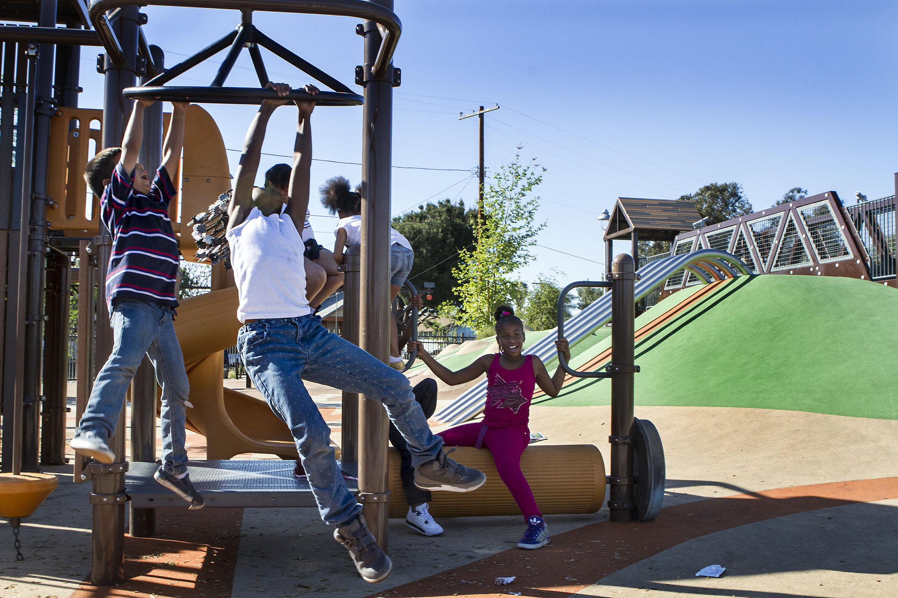
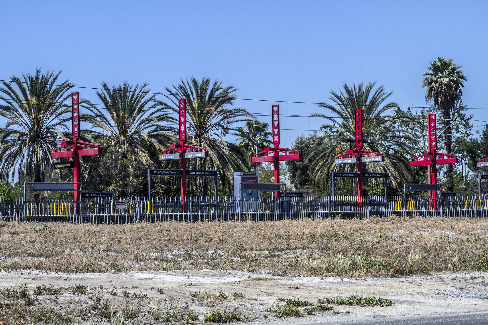
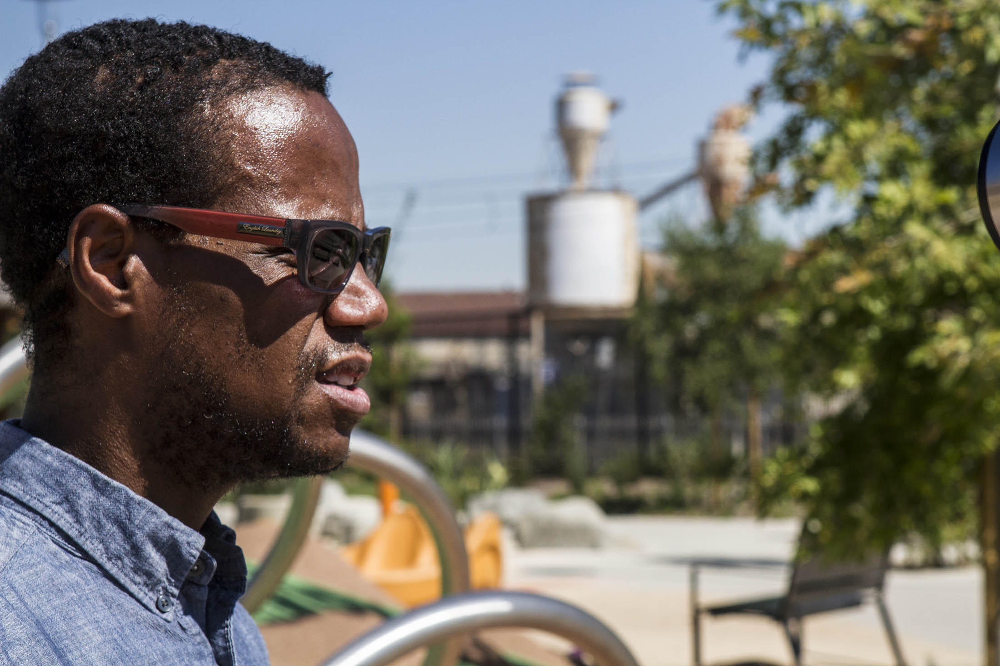

Barbara Stanton stands in front of a rendition of the Wattstar Theatre. Photo by Gary McCarthy for LA Wave.
WATTS – For community stakeholders interested in transforming vacant lots, it may seem easier to clean up blighted areas than to change public opinion about the area of South Los Angeles widely known for its infamous riots. Yet, several community-based organizations are determined to do both.
Barbara J. Stanton grew up in a different kind of Watts, a place that had plenty of stores to shop along 103rd Street and a movie theatre before the riots or as locals call it – Watts Rebellion – broke out Aug. 11, 1965.
After the rioters looted and burned 600 buildings in Watts and neighboring communities, business owners were slow to return, if they did at all. The only movie theatre in town did not return.
For over 20 years, Stanton has been trying to bring a theatre back to the area but with a twist: featuring an educational and job training facility for those wishing to work behind the scenes in the entertainment industry. Her nonprofit organization, Watts Cinema and Education Center (WCEC), expects to hold a ground-breaking ceremony before September in a vacant lot on Graham Avenue next to a Metro Blue Line station.
“When people say to me, [‘You’re putting] a movie theatre in the Watts neighborhood? [Fifty] years ago, they burned them down.’” Stanton said. “Well, there were a lot of politics that went into what happened and had those things not happened, then we may be in a different period right now.”
Serenity Park opened Jan. 29 and features a skate park, jungle gym, shaded picnic area and exercise equipment. The park is eco-friendly considering much of the building supplies came from recyclable materials and it has solar-powered trash compactors. Much of the landscape is drought-friendly. Photo by Gary McCarthy for LA Wave.
While there are critics, the concept has gathered support from elected officials including City Councilman Joe Buscaino, U.S. Reps. Maxine Waters and Janice Hahn to Hollywood heavyweights like Steven Spielberg, MGM Studios and Warner Bros. Entertainment.The 34,000-square-foot facility, Wattstar Theatre, will feature four screens displaying first-run movies with a seating capacity for 1,000 customers, according to WCEC officials.
Historically, the 2.1 mile-community is known for its dense population. Stanton said residents complain of having to take three buses to watch a movie. More than a million people live within a five-mile radius of the project and she hopes they will patronize the theatre.
WCEC officials hope to formalize an agreement with Regency Theatres to operate the business side while it focuses on providing job training for career pathways ranging from production work to public relations.
According to a 2013 report prepared by Los Angeles Department of Planning, Watts’ unemployment rate ranges from 10 to 15 percent while over 45 percent of residents who are 25 years and over do not graduate from high school.
“During construction, we have what’s called a 30 percent compliance rate that means we would like to have 30 percent of all the people [working] on the building to be from the neighborhood,” Stanton said.
Admittedly, she knows that is a high number, but Ed Grush General Contractor from Signal Hill reportedly agreed to the rate. She expects the construction to create 270 jobs over a period of 18 months.
A representative from the construction company said the project is on hold and is unsure whether or not it will move forward.
However, Stanton remains hopeful with Wattstar’s job-creation estimates. The theatre will employ 30 people with living-wages position.
“The education and training center will have 10 additional people,” she said. “Often you find in movie theatres that they hire college kids and they only give them 10 hours a week. Well, in our case these [living-wage] jobs are valuable because of the low-income level [present in Watts]. If [people] can have a full-time job, then they can have a full-time benefit.”
It took plenty of letdowns, such as securing a loan and facility space, to get WCEC where it is today.
In 1998, the Los Angeles Unified School District permitted a lease to allow the nonprofit to operate inside an auditorium at Markham Middle School. Renovations were supposed to take place to allow for screenings of some first-run films during after-school hours and weekends. However, two years later, school officials canceled the arrangement because construction had not started.
The empty lot by the 103rd Street/Watts Towers Metro stop where Barbara Stanton plans to open the new Wattstar Theatre. Stanton believes in the need for a theatre as more than a million people live within a five-mile radius of the project. Photo by Gary McCarthy for LA Wave.
Elected city officials managed to find vacant land in a redevelopment area, Cultural Crescent, that is home to Watts Towers and an art center bearing the iconic sculpture’s name. Residents determined the shoe-horn area would be a designated area for cultural enrichment in the early 1990s.
The Trust for Public Land (TPL) is currently working with artists-in-residence from Watts Towers Arts Center Campus to develop a master plan for the Watts Towers Park. The tourist attraction was designed by Italian immigrant, Sabato “Simon” Rodia in 1921, and took him 33 years to build.
TPL, a national nonprofit organization since 1972, transforms vacant lots into green spaces such as parks and gardens but hands the spaces back to partnering agencies to maintain them.
Within recent years, the nonprofit has expressed interest in Watts.
Exercise equipment at Serenity Park. Photo by Maya Sugarman for KPCC.
In 2011, TPL approached the Los Angeles Department Recreation and Parks to acquire vacant property located on Monitor Avenue. At the time, a private developer owned the 1.3-acre property and had intended to build houses on it. However, it sat empty for 42 years partially placed between a residential area near Wilmington Avenue and a busy rail line, according to TPL’s Los Angeles Program Director Tori Kjer.
“Recreation and Parks said ‘Yes, we’ll accept the project and manage and maintain it afterwards.’” Kjer said. “We then applied for the dollars, managed the design process, hired the contractors — everything. Construction lasted a year.”
Before construction began, TPL asked for community input to see how residents could best utilize the area. Free Lots Los Angeles, a coalition consisting of six South L.A.-based organizations, supported the effort by helping during the process.
The coalition created a database for vacant lands displaying over 20,000 areas available for transformation with details including whether property is privately or publicly owned.
“I think residents definitely wanted something that was going to be kid safe. They wanted something that would be accessible to the community at all times — and that would be safe for everyone to use,” said Malcolm Harris from Trust South Los Angeles, a member of the coalition.
Serenity Park opened Jan. 29 and features a skate park, jungle gym, shaded picnic area and exercise equipment. The park is eco-friendly considering much of the building supplies came from recyclable materials and it has solar-powered trash compactors. Much of the landscape is drought-friendly. TPL hired two artists-in-residence from Watts Towers Arts Center Campus to help design the park.
Malcolm Harris from Trust South Los Angeles in Serenity Park. Photo by Gary McCarthy for LA Wave.
The park comes at a time when most of the city’s greatest concentrations of food deserts – areas lacking fresh healthy foods -- are found in impoverished communities such as South L.A. and Watts.
Before former-Mayor Antonio Villaraigosa left office, he released a report, “Health Atlas for the City of Los Angeles.” The report stated residents who are born and raised in Watts have a life expectancy of 72.8 years which is 12 years shorter than residents living in affluent neighborhoods. Furthermore, Watts has the lowest rate in the state and has the same life expectancy rate the entire U.S. had almost 40 years ago.
Nearly 50 years after the rebellion, Watts does not have a sit-down restaurant. Fast-food chain restaurants are mainly available inside of Watts’ only plaza, the Martin Luther King Jr. Shopping Center on 103rd Street.
According to a report conducted by National Recreation and Park Association (NRPA),“research clearly shows that having access to places to get active is one of the most important factors linked to whether people will be active.”
Centers for Disease Control and Prevention conducted studies proving increasing access to places for physical activity can increase the number of days people exercise to at least three days a week by 25 percent.
The NRPA report also found smaller neighborhoods parks to be more effective in increasing active living than building large sporting complexes on the edge of communities. Developing and maintaining parks can pose a challenge for communities, but the report highlights case studies where it was possible when agencies partnered to make access possible.
After the riots, a commission report released by former-CIA director John A. McCone explained what led to the almost week-long unrest. Most scholars and historians agree that the arrest of a drunk driver by California Highway Patrolmen incited the riots, but it was not the cause of it. Police and community tension increased throughout the years, along with social issues brewing from unemployment, education, affordable housing and health. The commission offered suggestions to help the Watts community, but few of them were given serious thought.
However, community stakeholders say change works from the inside out. Not the other way around.
“The community itself can make that happen. We can find solutions to our own needs if we can come together and make this happen,” Harris said.

The skate park within Serenity Park, formerly an empty lot. Photo by Gary McCarthy for LA Wave.